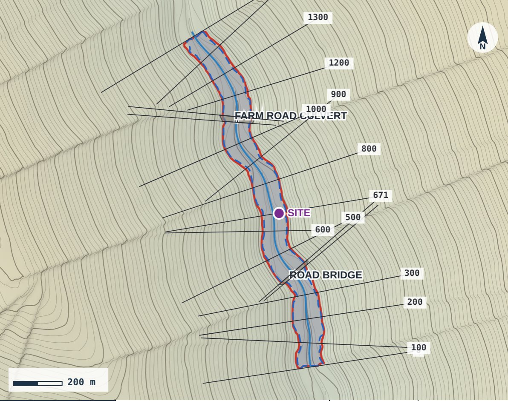

New developments and subdivisions
Most planning authorities ask for a flood risk assessment or flood lines before they approve development near a watercourse.
Flood risk assessments, 1:50, 1:100 and 1:200 year flood lines, and bridge and culvert studies for developers, mines, lenders and engineers in any country. Send us the coordinates — we tell you exactly where the water goes and deliver a signed report with drawings and CAD files in your local coordinates.
If your site is near a river or stream, planners, lenders and insurers will want to know where the 1:100 year flood reaches before they say yes.
Most planning authorities ask for a flood risk assessment or flood lines before they approve development near a watercourse.
Floor levels, set-backs and access routes above the design flood, shown on drawings your architect can use.
Design flood levels for pits, tailings facilities, plants and haul roads, for permits and lender requirements.
Flood lines and flood levels for environmental impact assessments, water permits and river buffers.
Know whether a site floods before you buy, lend against or insure it.
Will the road overtop? How far does the water back up? We check new and existing crossings and size them right.
Type your town, suburb or street address, or paste coordinates, and get an instant flood risk indication for your property, with a map. It takes about ten seconds and it is free.

A complete flood line report with the results, flood levels at your site and the engineer's certificate. Delivered as a signed PDF.
The 1:50 and 1:100 year flood lines on your property, with coordinates, contours and a title block ready for council.
Flood levels along the river and across your site, for your engineer, architect and land surveyor.
Drawing files for your town planner or land surveyor, and Google Earth files to show your investors and buyers.
Address, plot number or coordinates and what the study is for. You get a fixed quotation, usually within one working day.
We use your topographical survey or arrange LiDAR or a survey, and inspect the channel, culverts and bridges.
Our flood platform works out how much water the river carries in a big storm, how high it rises and exactly where it spreads.
A registered professional engineer certifies the flood lines. You receive the PDF report, drawings and CAD files.
We built our own analysis platform for rivers anywhere in the world, using the official design rainfall for your site. It turns your site into a complete, signed flood study faster than you expect, so you can plan, buy or build with certainty.
Every site is quoted individually. These are starting prices excluding survey.
We work from coordinates, satellite data and your survey, so we can take on sites anywhere, with local surveyors where a survey is needed. Based in South Africa, working across Africa and beyond.
In South Africa? Visit www.adventuity.co.za for flood lines in every province.
It is the edge of the area flooded by a flood that has a 1% chance of being equalled or exceeded in any year. It does not mean the flood happens once every hundred years; two can occur in the same decade.
For the free check and for quoting we use satellite terrain. Approval flood lines must be based on a topographical survey or LiDAR, usually with 0.5 m contours. We can use your surveyor's data or arrange the survey for you.
Usually five to ten working days after the survey data is available. Urgent work can be arranged.
A registered professional engineer certifies the flood lines, with the registration your approving authority asks for. Tell us the country and the authority when you request a quote.
Our reports follow accepted engineering practice, use the official design rainfall for your site, are signed by a registered professional engineer and include CAD files in your local coordinate system. If your authority has its own flood study rules, tell us and we work to them.
Any country. We are based in South Africa and work across Africa and beyond from coordinates, satellite data and your survey, with local surveyors where a survey is needed.
You receive a fixed quotation. Once you accept it, you can pay online by card through a secure payment link.
Yes. Road bridges, culverts, low-water crossings and weirs on the river are part of every study, so the flood lines show how they hold the water back. We also check existing crossings and size new culverts and bridges.
No. It is a quick indication to help you decide whether you need a study. It cannot be submitted for approval.
We reply with a fixed quotation and timeline, usually within one working day.
Thank you. Your reference is above; we have e-mailed you a copy and will reply with a quotation shortly.